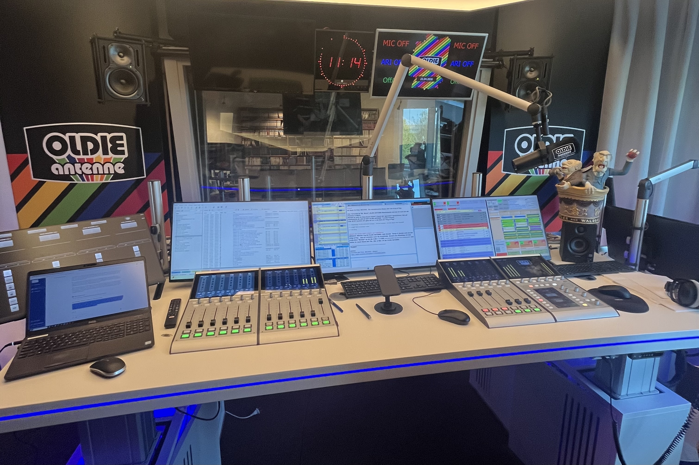
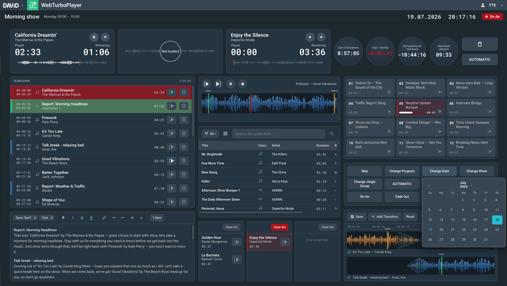
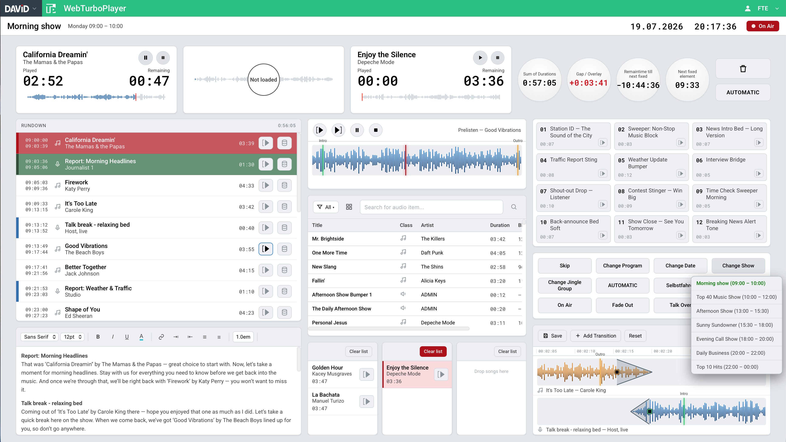
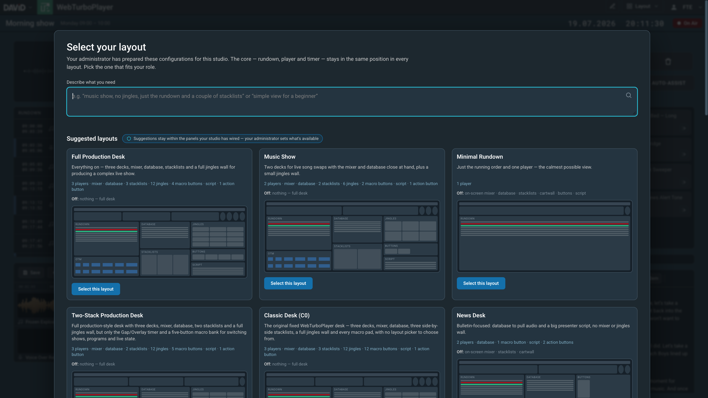
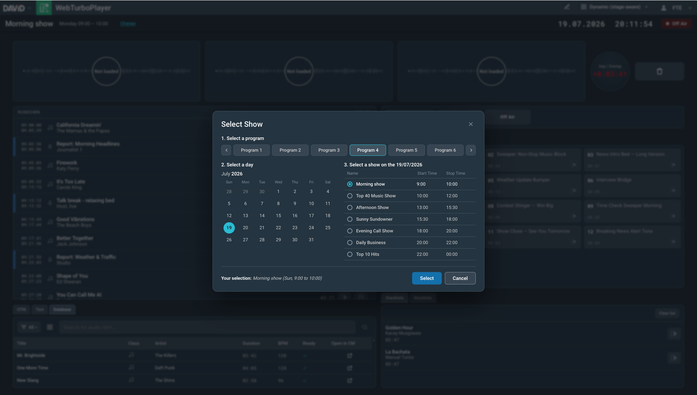
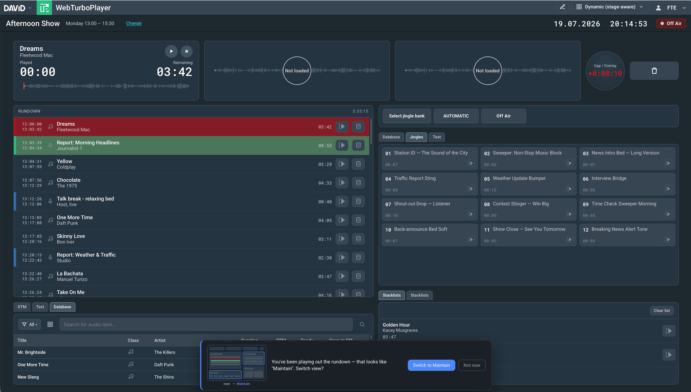
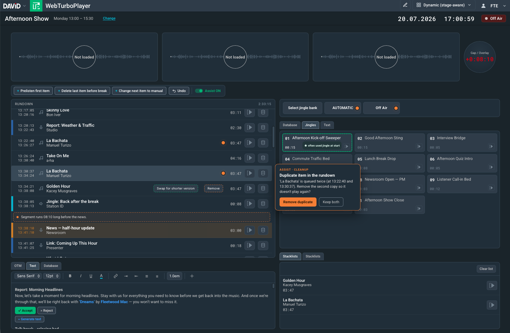
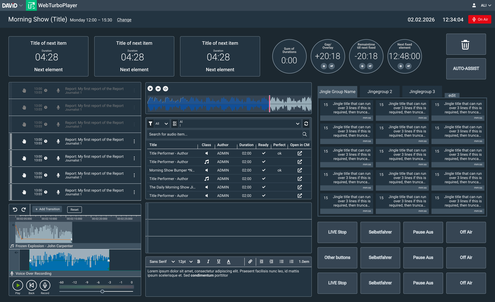

Adaptive UI for Radio Broadcasting
A Human-Centered Approach to Personalization in Playout Systems - Master's Thesis, 2026








Designing Adaptive Interfaces for Professional Radio Playout – Master's Thesis
Challenge
DAVID Systems' TurboPlayer, a professional radio playout system currently moving from desktop to web, imposes a single static layout on every moderator regardless of role, routine, or experience level. This creates UI clutter, manual rigidity, and efficiency barriers for the presenters who rely on it live, on air. Adaptive UI is the literature's answer to this kind of problem, but most existing research targets very different domains and non-expert users. Radio moderators are experts working under live, high-pressure conditions, which raises a central tension: the more an interface adapts, the more it risks disrupting the muscle memory experts depend on.
Traditional static interfaces often lack the adaptability needed to support users with diverse profiles.
L. Findlater and K. Z. Gajos
Design space and evaluation challenges of adaptive graphical user interfaces
Solution
This thesis investigates to what extent dynamic interfaces can improve user experience and reduce cognitive load for radio moderators, compared to a static interface. Following a design science approach, a field study fed into a design space of four cumulative interface configurations (ranging from a static baseline to a fully adaptive layout with an assistance layer) which were then evaluated in a usability study with expert moderators.
My role & tools
As the sole researcher and designer on this project, conducted in collaboration with DAVID Systems GmbH, I was responsible for:
- Conducting a systematic literature review on adaptive and context-aware interfaces
- Running semi-structured interviews with moderators and administrators
- Observing live shows and modelling tasks through Hierarchical Task Analysis
- Facilitating a closed card sort to identify core vs. contextual interface elements
- Synthesising findings into personas, scenarios, and a requirements set
- Designing and coding four cumulative interactive prototypes as one functional web app
- Running a Wizard-of-Oz usability study and analysing the results
Methods used included thematic analysis, interaction design and rapid prototyping, and a within-subjects usability evaluation. On the technical side, all four prototypes were built as a single functional web application in HTML, CSS, and vanilla JavaScript (no framework), styled with DAVID Systems' own design-token system in light and dark themes, with capabilities switched on/off per configuration from one shared codebase. This was facilitated by Claude AI and the Figma MCP, and an LLM was integrated at two points: parsing natural-language layout requests, and powering the in-context task-assistance suggestions. The prototype was fully functional rather than a mockup (draggable rundown players with waveform scrubbing, a live-searchable database of 200+ songs, jingle banks, and a working mixer/prelisten) so participants could operate it rather than just imagine it.
The process:
1. Research & Discovery
After a thorough literature study, a field study (interviews with moderators and administrators, on-site observations, and a card sort) identified recurring pain points: clutter, weak visual hierarchy, rigidity, and gaps in discoverability. These were synthesised into requirements, six personas, and usage scenarios.
2. Design Space & Ideation
The requirements were translated into four dimensions of adaptation (what, who, when, how much), condensed into two composite axes: spatial disruption and system autonomy. Mapping these axes revealed a "safe corridor" and a "danger zone" for interface change.
3. Prototyping
Four cumulative prototypes were coded as one shared web app so that any difference in testing could be attributed to one added capability: a static baseline (C0), a user-adaptable layout (C1), a stage-aware dynamic layout (C2), and a version with an added assistance layer (C3). A live demo of the prototype is available at wtpdemo.netlify.app.
4. Evaluation
Six expert moderators tested the prototypes in a counterbalanced, within-subjects usability study, combining thematic analysis of interviews with behavioural task data.
Outcome & reflection
The evaluation surfaced three key findings. First, a preference-performance dissociation: the dynamic layout was often the fastest to complete tasks with, yet moderators still preferred the static baseline. Second, system autonomy was welcomed while spatial disruption was resisted: participants valued a proactive assistance layer far more than having elements physically move around. Third, adaptive layouts were perceived as clearer at first glance, but more demanding once elements actually started moving, despite being the most efficient in practice.
Taken together, the findings suggest that adaptation by assistance and subtraction helps, while adaptation by rearrangement does not (yet). As a first evaluation of adaptive UI in this domain, the results are treated as directional (n = 6), with longitudinal studies and objective measures proposed as logical next steps.
Project overview
- Project type Master's Thesis, Human-Computer Interaction and Design
- Duration Master's thesis project (feb 2026 - july 2026)
- Collaborative partner DAVID Systems GmbH
- Tools Semi-structured interviews, field observations (HTA), card sorting, thematic analysis, HTML/CSS/JavaScript prototyping, LLM integration, Wizard-of-Oz usability testing
- Category UX Design, Human-Computer Interaction, Adaptive Systems
- Read the thesis